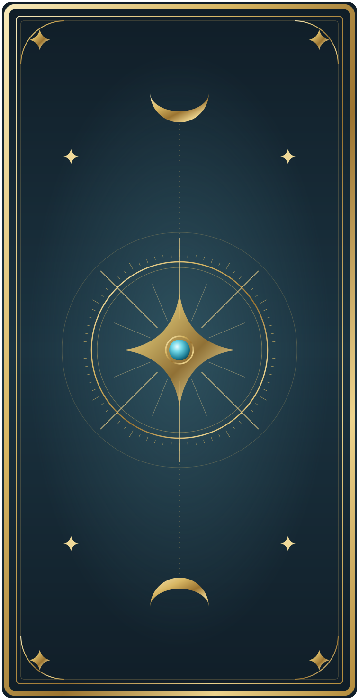
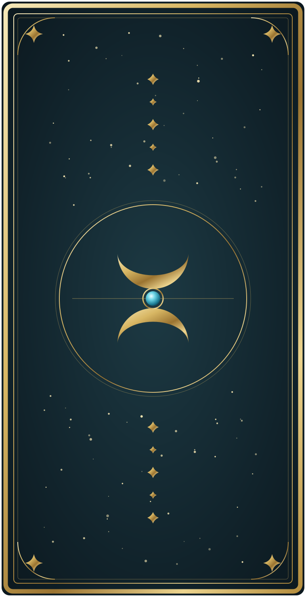
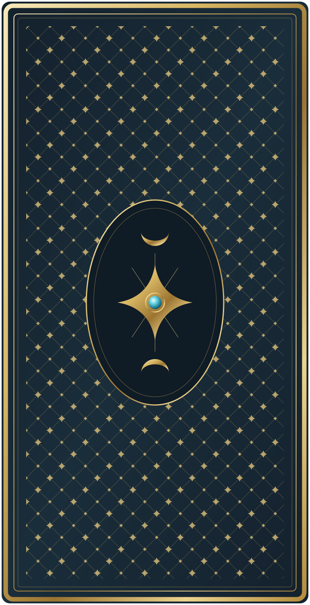
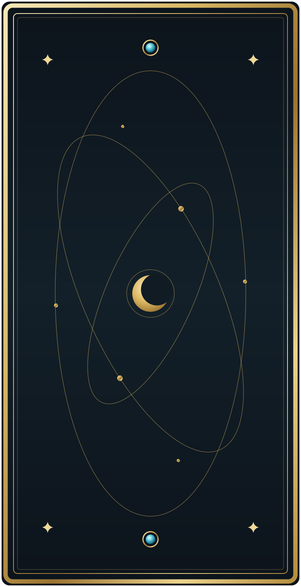

Tarot card · reverse
Concepts for review — not original artwork. These four designs were newly created by Claude (AI assistant) to be visually compatible with the artist's original front. They are not the artist's work, are not used in any of the three prototypes, and nothing here should be published as the artist's own design unless the artist approves, revises or replaces it.
Drag to turn · the front is the original artwork



